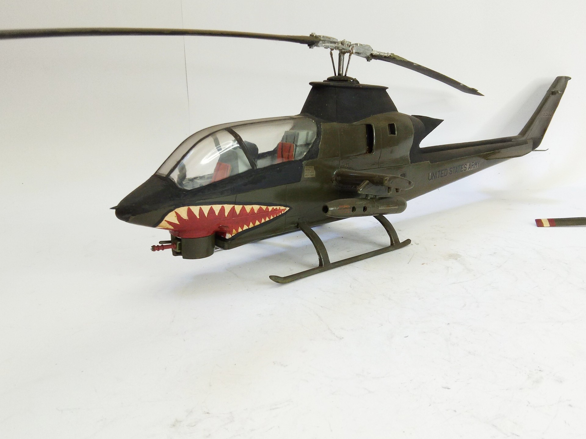
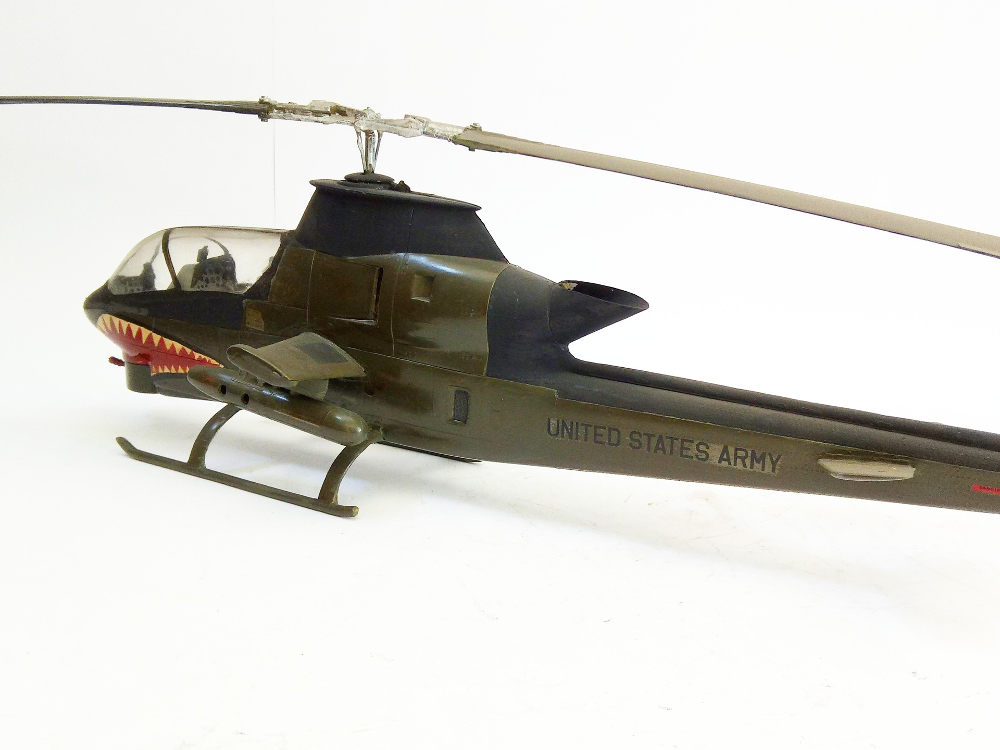

Aerei · scale model archive
Bell Hueycobra
Bell Hueycobra — Kit: Revell, Scale: 1/32. Interesting kit in this big scale, scratchbuilt IR exhaust suppression device. #1/32 #Revell

Photo gallery

English description
Interesting kit in this big scale, scratchbuilt IR exhaust suppression device.
#1/32 #Revell
Descrizione italiana
Interessante kit in questo grande scala, autocostruito IR exhaust suppression device.